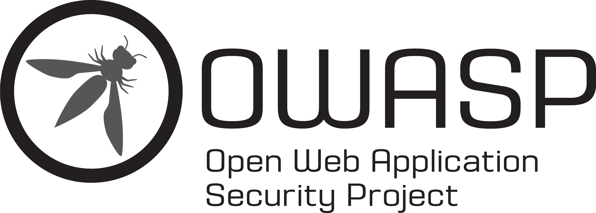
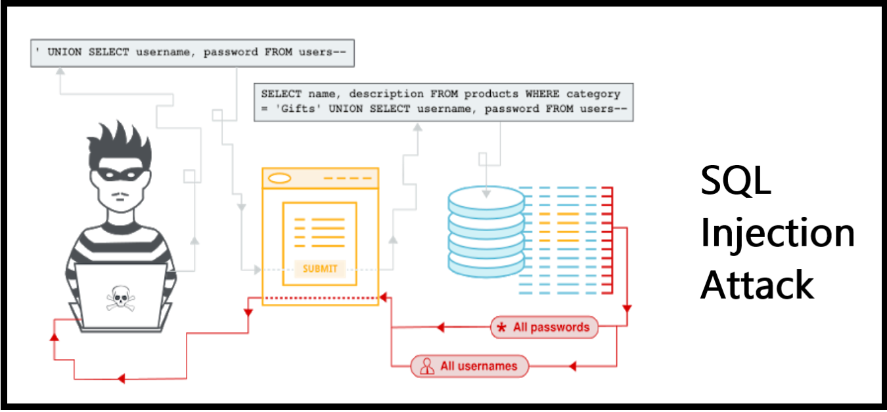

Understanding OWASP and Injection Attacks
A simple breakdown of web security vulnerabilities with real-world context
Introduction to OWASP
What is OWASP, and why is it important?
The Open Web Application Security Project (OWASP) is a nonprofit organization aimed at improving software security through community-driven open projects and free tools.
What is the OWASP Top 10, and how does it help organizations?
It's a list of the top 10 most critical security risks to web applications, helping developers and companies prioritize and address vulnerabilities effectively.
How often is the OWASP Top 10 updated, and why?
Every 3–4 years to reflect evolving threats, technologies, and community feedback, ensuring continued relevance in the changing security landscape.
Injection Attacks (OWASP Top 10)
Risk Description:
Injection attacks occur when user-supplied input is improperly handled, allowing malicious data to be interpreted as commands or queries by an interpreter (e.g., SQL, OS, LDAP).
How It Happens:
Attackers exploit input fields (like forms or URLs) by injecting malicious code that executes unauthorized commands or retrieves sensitive data.
Prevention:
- Use parameterized queries and prepared statements
- Validate and sanitize user input
- Use least privilege access for databases
- Apply security headers and proper error handling
Case Study: British Airways Data Breach (2018)

What happened?
Attackers injected malicious JavaScript into the British Airways website and mobile app, capturing personal and payment information from about 380,000 customers.
Connection to OWASP Risk:
This was a classic injection attack via third-party script tampering (supply chain weakness) that captured sensitive user data.
What could have prevented it?
A strong Content Security Policy (CSP), subresource integrity checks, and better input/output monitoring could have stopped or minimized the impact.